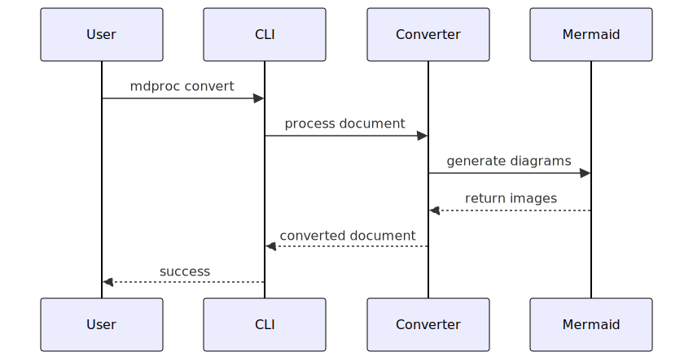

Mermaid Diagram Test
This document tests Mermaid diagram support in our markdown processor.
Flowchart Example

Sequence Diagram

Class Diagram

Architecture Overview
This demonstrates how our hexagonal architecture handles Mermaid diagrams:

Summary
The Mermaid integration allows us to:
- Process diagrams automatically during conversion
- Support multiple formats (PNG for PDF, SVG for HTML)
- Maintain clean architecture with proper separation of concerns
- Provide fallback handling when diagram generation fails
This enhances our document processor significantly for technical documentation!